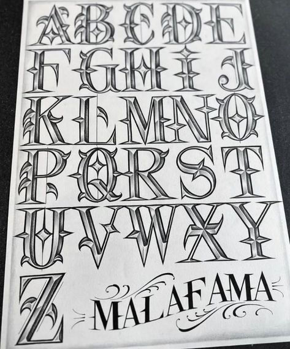
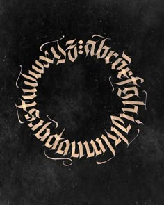

Letras Góticas
Las letras góticas, también conocidas como blackletter, tienen un estilo dramático y ornamentado que evoca la tradición medieval.

Graffiti
El graffiti es una forma de arte urbano que utiliza letras estilizadas y colores vibrantes para expresar creatividad y mensaje social.